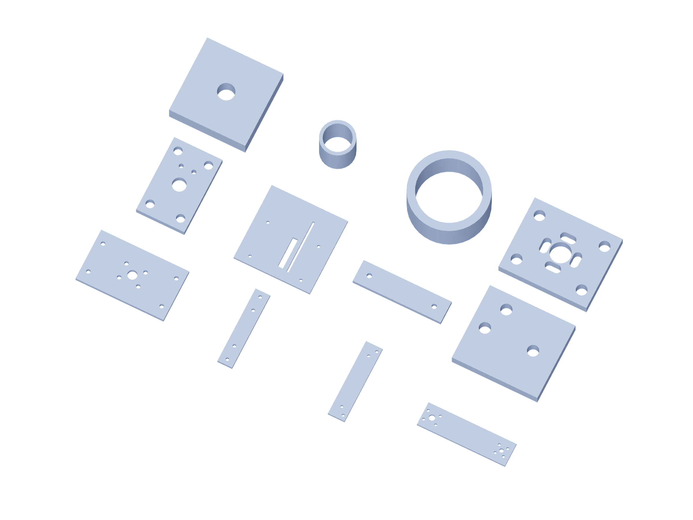

Kit / fabrication10 / 179
Metal kit / 4
6061 aluminum dimensions are finished blank sizes. Bought angles remain angles; shafts, bearings and guide blocks are separate purchased parts.

| Part | Qty | Finished blank / mm |
|---|---|---|
roll-cradle-back | 1 | 120 × 70 × 6.35 |
gun-jaw | 4 | 25 × 130 × 6.35 |
service-load-jaw | 2 | 35 × 160 × 6.35 |
angular-lever | 3 | 190 × 50 × 6.35 |
drive-bulkhead | 6 | 38 × 60 × 6.35 |
linear-drive-support | 6 | 150 × 150 × 6.35 |
motor-support-leg | 12 | 100 × 25 × 6.35 |
thrust-support-leg | 12 | 42.65 × 38 × 6.35 |
thrust-angle-pad | 6 | 25.4 × 25.4 × 6.35 |
kp08-fixed-riser | 12 | 10 × 10 × 11.35 |
kp08-floating-riser | 6 | 10 × 10 × 5 |
nut-face | 12 | 46 × 38 × 6.35 |
Use gun-positioner-drill-templates.pdf at actual size. The 3D STEP and registered projections govern formed angles and hub faces.